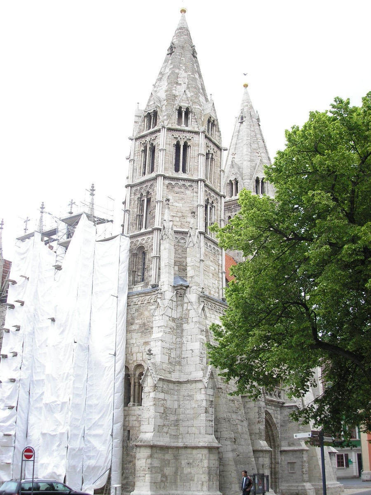

Organist of Divi Blasii — negotiating like a Bach

The organist of Divi Blasii died in late 1706; Bach auditioned at Easter 1707 (scholars have long suspected the audition piece was Christ lag in Todes Banden, BWV 4 — stylistically perfect for the date and the place; unproven, and flagged so). The council deliberated in his favor, and the surviving proceedings then record a twenty-two-year-old negotiating without a flicker of deference: asked his terms, he required the same 85 gulden he made in Arnstadt — a raise on the post's previous salary — plus the traditional allowances (three measures of grain, two cords of wood, six times threescore faggots of kindling, three pounds of fish annually) plus a wagon to move his household. The council agreed to everything. On 15 June 1707 he signed.
The pattern deserves its own sentence, because it repeats at every job change for the rest of his life: Bach knew his market value with unsentimental precision, stated it, and — the leverage of demonstrated excellence — generally received it. (The one great exception, Leipzig's fee-dependent package, he grumbled about to Erdmann for years.)
He returned his Arnstadt keys honorably, and — clan machinery engaging as ever — arranged his own succession: his cousin Johann Ernst Bach took over the Neue Kirche bench behind him.
Why it matters. First contact with the employer-type of Bach's destiny: not a duke or prince but a town council — sovereign, committee-minded, budget-anxious. Everything about how he handles Mühlhausen's burghers (firm on money, meticulous on the organ project, gracious in exit) previews the Leipzig marriage, minus — this once — the acrimony.
Mühlhausen council proceedings, May–June 1707 (New Bach Reader)
Wolff, The Learned Musician, ch. 5
→ full bibliography & links